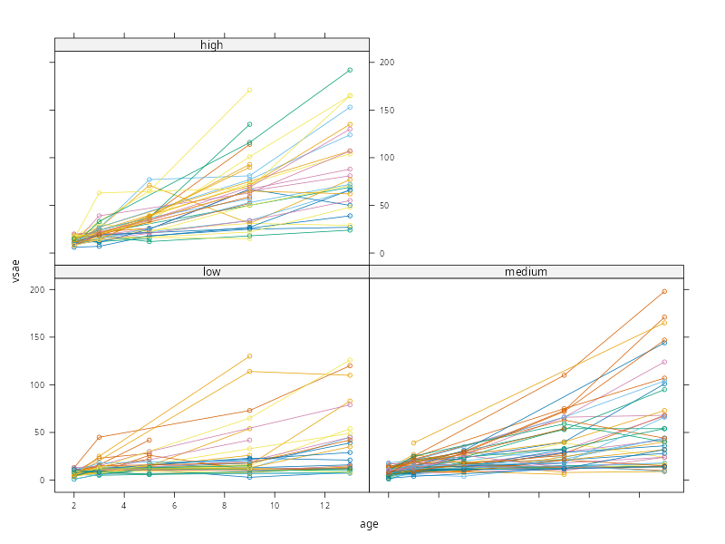
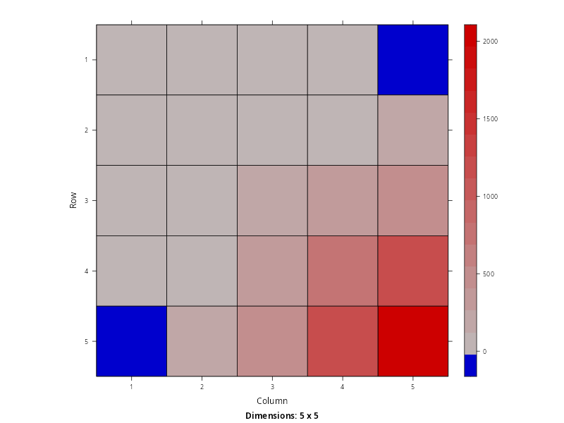
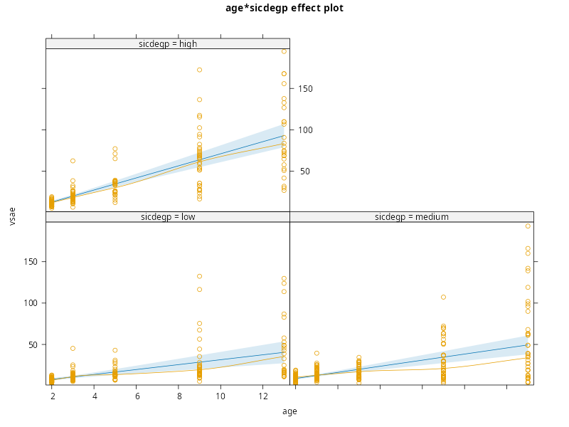
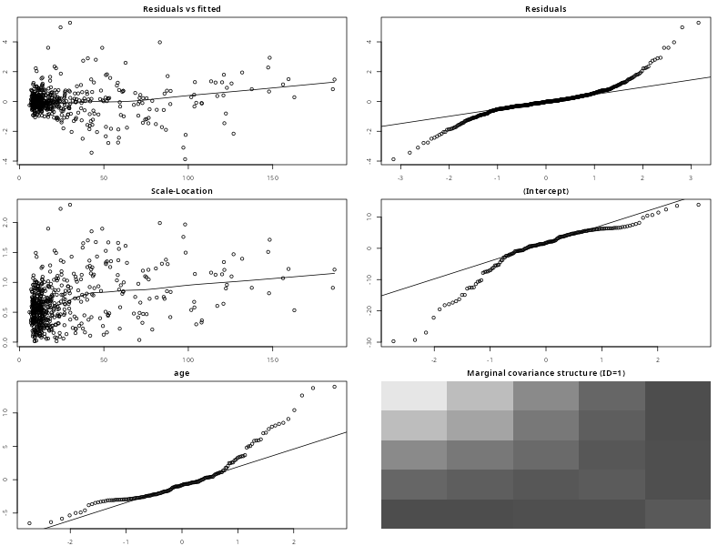

PCHN63112 Workshop: Longitudinal Data Example#
Loading Packages#
We will start by loading all the packages that we need at the beginning. This will tidy-up the output, allow any messages or warnings to not clutter up the rest of the output and not bury any packages within the main body of the analysis. We also use source() on the file plot-lme.R. This needs to be in the current working directory and will bring the custom function plot.lme() into scope.
library('lattice') # plotting functions
library('Matrix') # covariance extraction and visualisation
library('nlme') # mixed-effects modelling
library('car') # Asymptotic ANOVA tests
library('emmeans') # Follow-up tests
library('effects') # Effects plots from the model
source('plot-lme.R') # custom plot.lme() function for making assumptions plots
Loading required package: carData
Welcome to emmeans.
Caution: You lose important information if you filter this package's results.
See '? untidy'
Use the command
lattice::trellis.par.set(effectsTheme())
to customize lattice options for effects plots.
See ?effectsTheme for details.
The Autism Data#
The data we will use concern measurements of socialisation in 158 children diagnosed with autism spectrum disorder (ASD). The children were measured at ages 2, 3, 5, 9, and 13. The outcome variable is the Vineland Socialisation Age Equivalent (VSAE) score, which combines multiple assessments of socialisation at each age. Also of interest was the children’s initial language development. This was measured using the Sequenced Inventory of Communication Development (SICD) at age 2 and the children were placed into groups depending upon whether they scored low, medium or high on the expressive language subscale. The main interest of the study was to assess how socialisation improved over time, as well as whether this improvement had any relationship with the child’s initial language skills at age 2.
The data are available to download from here. Once downloaded to the current working directory, the code below will read the data in and then print the values for the first 3 children.
autism <- read.csv('autism.csv')
autism[1:14,]
age vsae sicdegp childid
1 2 6 3 1
2 3 7 3 1
3 5 18 3 1
4 9 25 3 1
5 13 27 3 1
6 2 17 3 3
7 3 18 3 3
8 5 12 3 3
9 9 18 3 3
10 13 24 3 3
11 2 12 3 4
12 3 14 3 4
13 5 38 3 4
14 9 114 3 4
As this is already long-formatted, we just need to convert the relevant variables to factors. We also rename the levels associated with sicdegp factor to make their meaning clearer.
autism$childid <- as.factor(autism$childid)
autism$sicdegp <- as.factor(autism$sicdegp)
levels(autism$sicdegp) <- c('low','medium','high')
We can now briefly summarise all the variables to check everything is in order.
summary(autism)
age vsae sicdegp childid
Min. : 2.000 Min. : 1.00 low :192 1 : 5
1st Qu.: 2.000 1st Qu.: 10.00 medium:255 2 : 5
Median : 4.000 Median : 14.00 high :165 3 : 5
Mean : 5.771 Mean : 26.41 14 : 5
3rd Qu.: 9.000 3rd Qu.: 27.00 15 : 5
Max. :13.000 Max. :198.00 17 : 5
NA's :2 (Other):582
Of note is that VSAE has a very wide range, from 1-198, and also contains two missing values. This indicates that there were some occasions when a particular child was not measured. There are also more children in the medium SICDEGP group than the others, making the data unbalanced in relation to this factor. Also note that childid does not run sequentially, as these data represent a subset of children who participated in this study.
Model Notation#
As these data are a mixture of categorical and continuous variables, a more general regression framework will be needed when writing this model. In what follows, we will use descriptive labels rather than greek letter for categorical variables (e.g. \(\text{SICDEGP}_{j}\) rather than \(\alpha_{j}\)) and will introduce \(\beta\)-coefficients for continuous variables (e.g. \(\left(\beta_{1} \times \text{age}_{i}\right)\) rather than \(\beta_{1}x_{i1}\)). This should hopefully make it clearer which terms are categorical and which are continuous. In reality, the whole model is fit as a regression with dummy variables in place of the categorical predictors. However, it can be less clear to write the model this way, even if this is the reality of how it is fit.
Data Structure#
Although we already know what structure these data have, we will run through the logic for completeness.
Firstly, we need to determine our unit of analysis. In this example, our model is trying to explain the socialisation skills of children with ASD. The entities that our model is describing are the scores of the children, and so our units of analysis are the children themselves.
Secondly, we determine what each row of the long-formatted data represents in relation to the units of analysis. Examining the first few rows
head(autism)
age vsae sicdegp childid
1 2 6 high 1
2 3 7 high 1
3 5 18 high 1
4 9 25 high 1
5 13 27 high 1
6 2 17 high 3
we can see that each row corresponds to a single unit (child) measured multiple times. So these are either repeated measurements or longitudinal data. The difference lies in whether there is an explicit measurement of time here. As we can see, the different repeats are indexed by the values of age. Importantly, these values have an order that must be maintained and the temporal gap between successive values is not uniform. The time scale is also meaningful, as it is measured in years. As such, this is longitudinal data.
Finally, we need to determine whether there are any clustering variables that represent a higher-order dependency structure in these data. The only potential candidate is sicdegp, but we know from the data description above that this is an artificial experimental grouping based on the child’s language skills at age 2. It is not indicative of a shared context of environment that binds different children together. As such, this is clearly a grouping variable rather than a clustering variable. Based on this, we can construct the following table of the levels of these data, using the guidance in the lesson
Data Type |
Longitudinal |
|---|---|
Dataset |
|
Level 1 |
Repeats over time |
Level 2 |
Child |
Level 3 |
- |
Because these data are quite simple, we can get an initial sense of their structure by constructing a graph of child-specific trajectories over time for each level of sicdegp
xyplot(
vsae ~ age|sicdegp, # x-axis=age, panel=SICDe Group
groups = childid, # separate lines per-child
data = autism, # data
type = "b" # lines with points
)

Several patterns are noticeable here. Firstly, the variance appears to increase as a function of age, getting wider and wider as age increases. Whatever model we choose, we will need to make sure that the variance estimated for each value of time increases appropriately. Secondly, there is a slight hint that some of these trajectories are not linear, rather they bend upwards. As such, we may wish to entertain a quadratic model of time as well. Finally, it does not look as if the variance between these trajectories differs majorly between the levels of sicdegp, but this is something we could consider.
Model Building#
To build a model of this dataset, we use the 3-step procedure outlined in the lesson. We assume at this point that the data has been investigated, wrangled, cleaned and ready for modelling.
Step I: A Single Dependency Structure#
We start by isolating a single dependency structure which, in this example, is a single child. We choose the first child in the dataset, who is indexed using childid == '1'. We subset the data below
autism.1 <- subset(autism, childid=='1')
print(autism.1)
age vsae sicdegp childid
1 2 6 high 1
2 3 7 high 1
3 5 18 high 1
4 9 25 high 1
5 13 27 high 1
autism.1 <- subset(autism, childid=='1', select= -sicdegp)
print(autism.1)
age vsae childid
1 2 6 1
2 3 7 1
3 5 18 1
4 9 25 1
5 13 27 1
Our basic model for a single child is therefore
which is just the simple regression of VSAE on age.
autism.lme <- lme(fixed = vsae ~ 1 + age + sicdegp + age:sicdegp,
random = ~ 1 + age|childid,
data = autism,
na.action = na.omit,
control = lmeControl(opt='optim')
)
print(autism.lme)
Linear mixed-effects model fit by REML
Data: autism
Log-restricted-likelihood: -2348.065
Fixed: vsae ~ 1 + age + sicdegp + age:sicdegp
(Intercept) age sicdegpmedium sicdegphigh
1.8431741 2.9719752 -0.3247815 -3.8581067
age:sicdegpmedium age:sicdegphigh
0.7151603 4.3348154
Random effects:
Formula: ~1 + age | childid
Structure: General positive-definite, Log-Cholesky parametrization
StdDev Corr
(Intercept) 8.602952 (Intr)
age 4.019888 -0.998
Residual 7.769026
Number of Observations: 610
Number of Groups: 158
Sigma.1 <- getVarCov(autism.lme, type='marginal', individual='1')$`1`
print(Sigma.1)
image(as(Sigma.1,'Matrix'))
1 2 3 4 5
1 60.932515 -1.624765 -6.023787 -14.82183 -23.61988
2 -1.624765 72.692989 40.255191 96.09513 151.93507
3 -6.023787 40.255191 193.170916 317.92906 503.04497
4 -14.821831 96.095133 317.929061 821.95469 1205.26477
5 -23.619876 151.935074 503.044974 1205.26477 1967.84234

plot(allEffects(autism.lme, residuals=TRUE))

plot.lme(autism.lme, vcov.id='1')

Anova(autism.lme)
Analysis of Deviance Table (Type II tests)
Response: vsae
Chisq Df Pr(>Chisq)
age 161.601 1 < 2.2e-16 ***
sicdegp 35.907 2 1.595e-08 ***
age:sicdegp 25.667 2 2.670e-06 ***
---
Signif. codes: 0 ‘***’ 0.001 ‘**’ 0.01 ‘*’ 0.05 ‘.’ 0.1 ‘ ’ 1